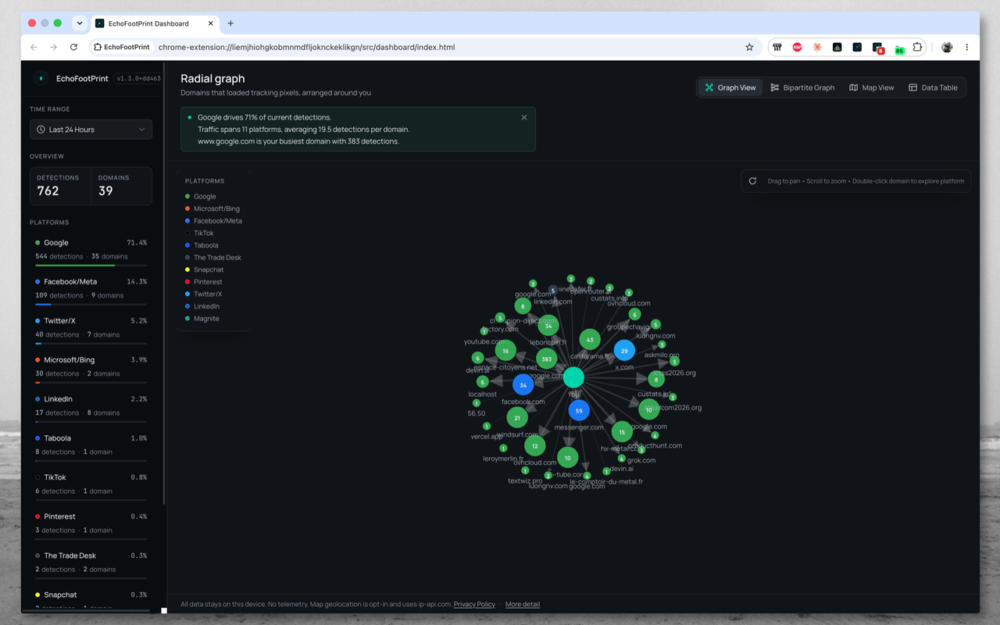
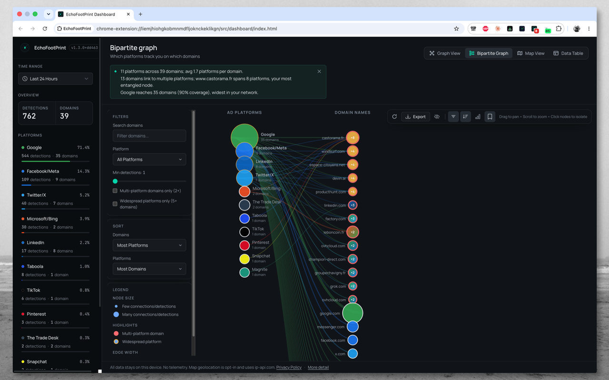
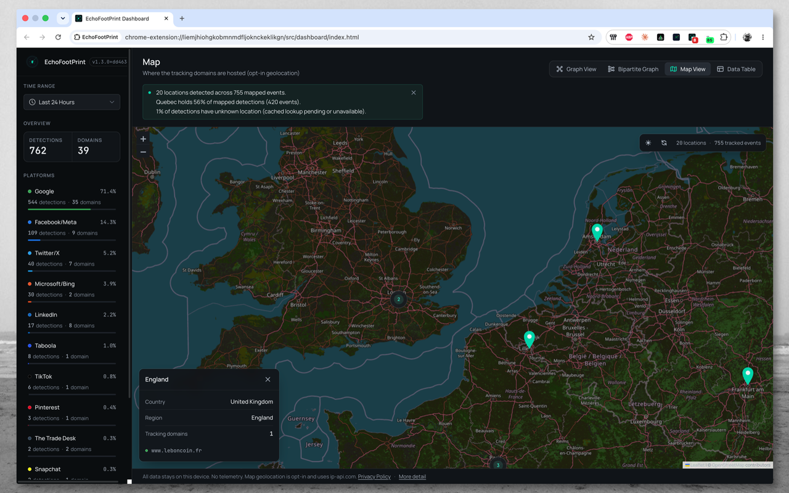
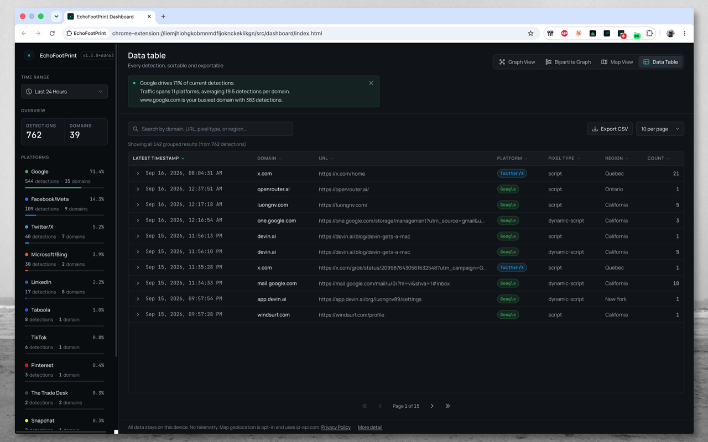
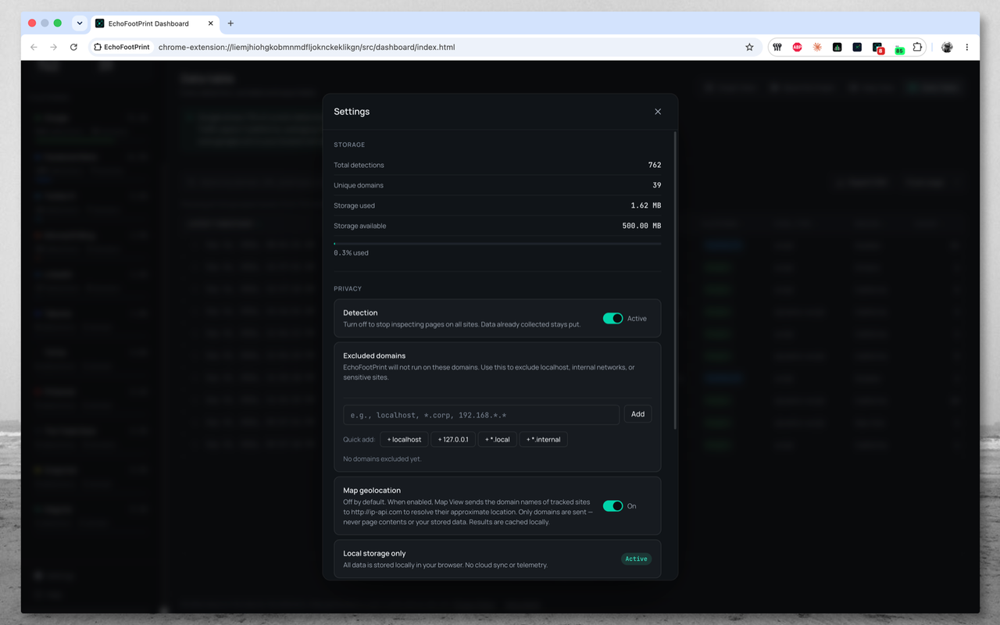

Real-time detection
Automatic pixel detection across 50 major platforms, the moment pages load.
Privacy-first · Local-only
EchoFootPrint reveals tracking from 50 major ad and analytics platforms as you browse — with zero configuration, zero accounts, and zero telemetry.

Three steps to transparency
No setup, no sign-in. EchoFootPrint runs silently and turns invisible tracking into a picture you can read.
Runs silently in the background. Nothing to configure.
Tracking pixels are matched on your device and stored in local IndexedDB.
Switch between graph, bipartite, map, and table views to read your footprint.
One footprint, four lenses




Built for clarity
Automatic pixel detection across 50 major platforms, the moment pages load.
Radial, bipartite, map, and table views turn raw beacons into an argument you can show.
Local-only storage with PNG, SVG, and CSV export — and a clear wipe in Settings.
Platform coverage
Social networks, exchanges, DSPs, content discovery, mobile, and data brokers — all matched locally on your device.
Meta, Google, X, LinkedIn, TikTok, Amazon, Pinterest, and more.
Trade Desk, Xandr, OpenX, PubMatic, Magnite, Criteo, and more.
Unity, ironSource, Lotame, BlueKai, Epsilon, Acxiom, and more.
Privacy first
No accounts. No telemetry. No cloud sync. What EchoFootPrint sees stays in your browser.
A sharper, faster dashboard — instrument-panel redesign, reliable keyless map, lazy-loaded views on React 19.
Release notesCommon questions
No — it makes tracking visible so you can see the ecosystem. Pair it with a blocker if you want to stop requests.
Detected domains, URLs, timestamps, pixel types, and platform labels — stored locally in IndexedDB on your device.
No telemetry, ever. The only network call outside page loads is the strictly opt-in map geolocation lookup — cached locally for 7 days.
Yes — Settings → Clear All Data removes detections, the geo cache, and preferences. Uninstalling removes everything.
Chromium browsers via Manifest V3 — Chrome, Edge, and others. Firefox support is planned separately.
Begin in one click
Free, private, and installed in seconds.